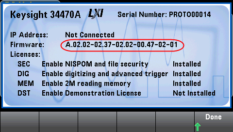
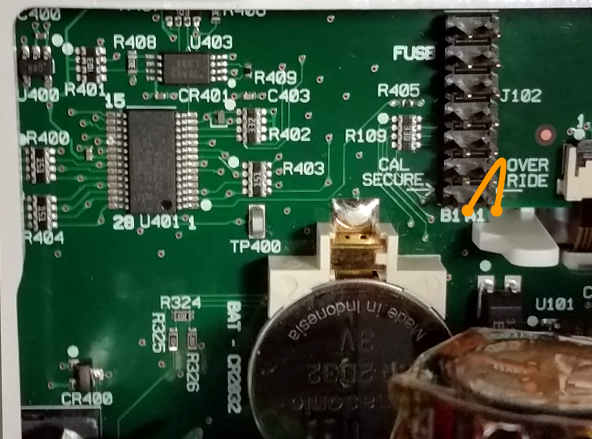
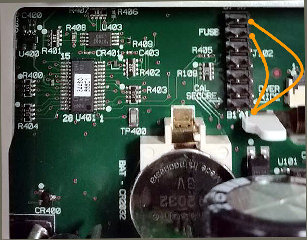

This procedure should be performed by qualified service personnel only.Turn off the power and remove all measurement leads and other cables, including the power cord, from the instrument before continuing.
The instrument security code is set to AT3446XA at the factory. If it has been changed and you no longer remember the code, you can reset the code back to its factory default value by using one of the two following procedures.
From the instrument front panel, press [Shift] > [Help] > About to view the instrument firmware revision. An example display is:

The last two digits of the firmware revision indicate the front panel PC board revision and which of the two procedures you should use. If the firmware revision ends with 02 or greater, use Procedure A. If the firmware revision ends with 01, use Procedure B.
If you encounter problems, contact Keysight Technologies for technical support.
In the United States: (800) 829-4444
In Europe: 31 20 547 2111
In Japan: 0120-421-345
Use www.keysight.com/find/assist to contact Keysight worldwide, or contact your Keysight Technologies representative.
|
|
This procedure should be performed by qualified service personnel only.Turn off the power and remove all measurement leads and other cables, including the power cord, from the instrument before continuing. |

|
|
This procedure should be performed by qualified service personnel only.Turn off the power and remove all measurement leads and other cables, including the power cord, from the instrument before continuing. |
